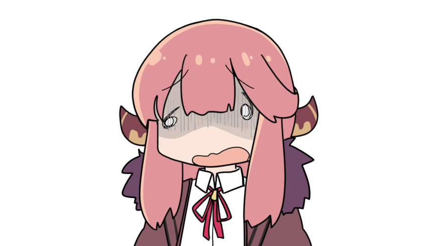
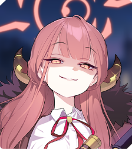

อารุ
(ARU)
สาวน้อยที่ยกย่องตัวเองเป็นประธาน ของหน่วยรับจ้างสารพัด 68
เธอขยายชมรมหน่วยรับจ้างสารพัด 68 ของสถาบันเกเฮนน่า และทำธุรกิจสีเทาอย่างไม่สนใจใคร เธออยากให้คนอื่น มองเธอว่าเป็นอันธพาลสุดเท่
แต่ในหลายๆ ครั้ง เธอก็เผลอเปิดเผยตัวตนที่แท้จริง ว่าเธอคือคนติงต๊องดีๆ นี่เอง
ตัวอย่าง live2d